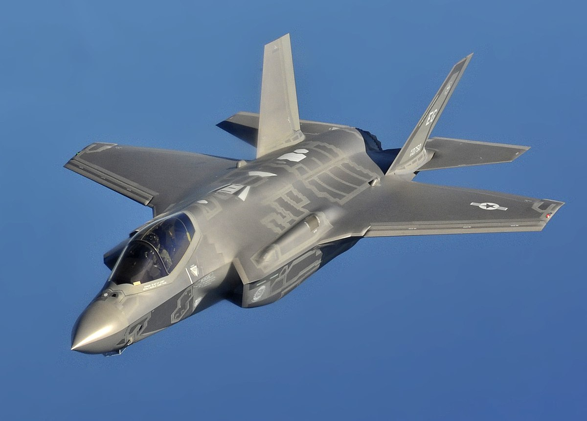
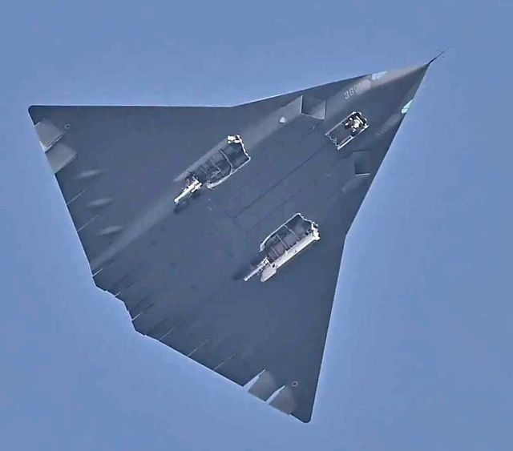

The era of bulky, super-maneuverable fighter jets that soared faster than the speed of sound is fading.
A new age of aerial warfare is on the horizon, redefining the concept of Air superiority.
 Modern fighter jets are now designed with cutting-edge sophistication,
making them nearly invisible to radar. While they retain the ability to
break the sound barrier, their true value lies in the roles they perform on
the battlefield.
Fighter jets are categorized by "generations," which reflect the era and
technological advancements during their development. Today, the most
advanced aircraft belong to the 4.5 and 5th generations, with the 5th
generation representing the pinnacle of current aviation technology.
These "stealthy birds" are not literally invisible, as they are made of matter
and occupy physical space. Instead, stealth refers to their capability to
operate undetected by radar, allowing them to penetrate enemy airspace
without detection. This is a feature that previous generations of aircraft lack.
But what makes a fighter jet stealthy?
Here are the key features of stealth aircraft:
Modern fighter jets are now designed with cutting-edge sophistication,
making them nearly invisible to radar. While they retain the ability to
break the sound barrier, their true value lies in the roles they perform on
the battlefield.
Fighter jets are categorized by "generations," which reflect the era and
technological advancements during their development. Today, the most
advanced aircraft belong to the 4.5 and 5th generations, with the 5th
generation representing the pinnacle of current aviation technology.
These "stealthy birds" are not literally invisible, as they are made of matter
and occupy physical space. Instead, stealth refers to their capability to
operate undetected by radar, allowing them to penetrate enemy airspace
without detection. This is a feature that previous generations of aircraft lack.
But what makes a fighter jet stealthy?
Here are the key features of stealth aircraft:
Features of Stealth Aircraft
Reduced Radar Detection:
- Angular designs scatter radar waves.
- Radar-absorbent materials (RAM) absorb signals.
Infrared Suppression:
- Shielded exhausts and cooled gases minimize heat signatures.
Minimized Noise:
- Advanced engine and system designs reduce noise output.
Electromagnetic Control:
- Limited or low-power sensor emissions to avoid detection.
Internal Weapon Storage:
- Weapons are stored inside the fuselage to reduce radar visibility.
Advanced Materials:
- Lightweight composites lower weight and radar detectability.
Low-Profile Sensors:
- Flush-mounted or hidden antennas and sensors enhance stealth.
Only a handful of countries currently operate 5th-generation fighter jets.
Notable examples include:
F-35

F-35 is capable of landing vertically

Worlds first operational 5th gen fighter
SU-57
J-20
India's 5th-generation fighter program, AMCA (Advanced Medium
Combat Aircraft), is still under development. The AMCA is expected to
enter mass production by 2035. While India is trailing behind in this
technological race, the AMCA is envisioned as a 5.5-generation aircraft,
combining the capabilities of 5th-generation fighters with select features
of 6th-generation designs.

India's envisioned 4.5 gen TEDBF and 5.5 gen AMCA
The Future: 6th-Generation Aircraft
Aerial warfare continues to evolve rapidly, with the focus now shifting to
6th-generation fighter jets. Recent news about China testing its latest 6th-
generation technologies has created a buzz. However, reports suggest
that the United States had already tested similar technologies long before
China's announcement.
America's Next Generation Air Dominance (NGAD) program aims to lead
the development of 6th-generation fighters, emphasizing artificial
intelligence, advanced sensors, and networked capabilities.

Concept design of USA's 6th gen Fighter program

Actual footage of China's brand new 6th gen Aircraft, while testing in Chengdu.
As the skies become the new frontier of innovation, the evolution of
aerial warfare signifies more than just technological advancement—it
represents a shift in the balance of power, strategy, and security. With
every leap forward, the future of combat grows smarter, faster, and more
precise, ensuring that the wings of the future will not just dominate the
skies but redefine the very essence of warfare.